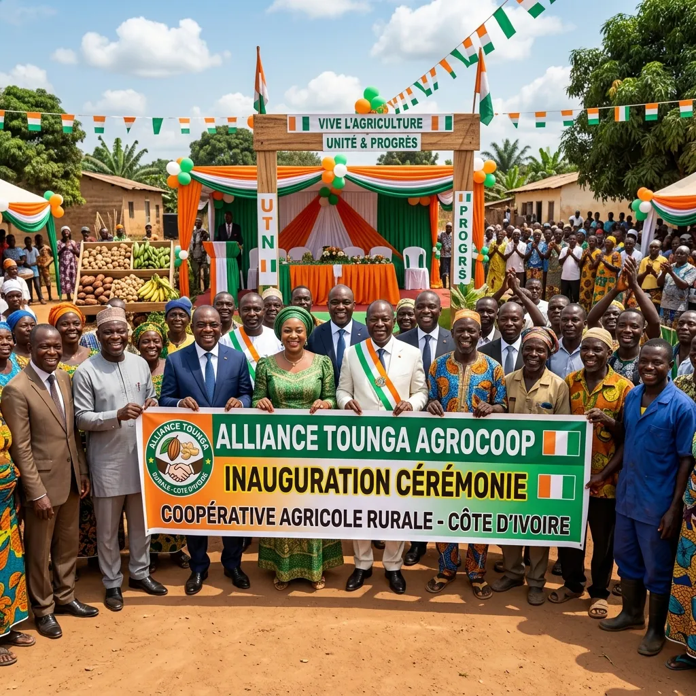

Institutionnel

15 Juin 2025
Lancement officiel de la coopérative
Cérémonie officielle de présentation d'Alliance Tounga AgroCoop aux autorités locales et aux partenaires du développement. L'événement marque un tournant dans la région du Bafing.
Lire la suite